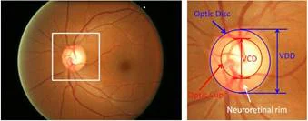
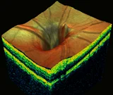
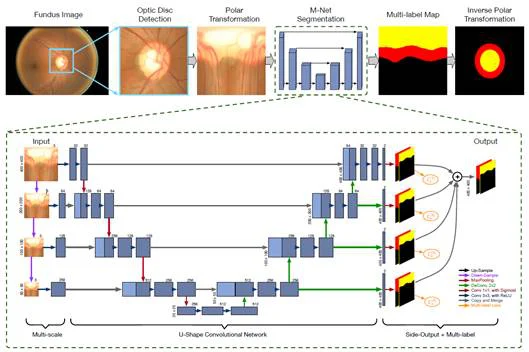
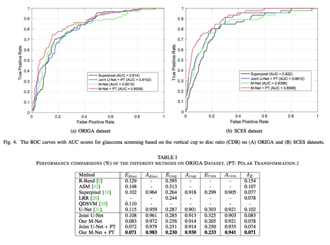

基于深度学习系统的视网膜图像视盘与视杯区域提取
青光眼（Glaucoma）是一系列会导致视神经受损，进而造成视力丧失的眼疾。在全世界范围内，是第二大致盲原因（仅次于白内障），也是导致不可逆性失明的首要原因。由于青光眼造成的视神经损伤和视力损失无法逆转，青光眼的早期筛查和诊断对于保持视力和生活质量至关重要。临床上，除视野检测和眼压测量外，另一种主要青光眼筛查技术是基于眼底照相的视盘（Optic Disc，简称OD，旧称视神经乳头ONH）评估。如图1所示，它利用一些青光眼危险因素，例如垂直杯盘比（CDR）、盘直径（ODD）以及盘沿（RIM），在青光眼患者和健康对象之间进行二元分类，适用于群体筛查。但对于大规模筛查，人工评估不仅不能保证客观并且耗时昂贵，亟需要自动评估方法提高效率和质量。


图1 眼底图（左），2D眼底图中的视杯、视盘、盘沿和杯盘比（中）和3D视盘（右）
遵循临床实践设计具有医学解释的自动评估方法，最关键的就是视盘（OD）和视杯（OC）的准确分割。之前iMED团队对此做过大量的研究，也取得了优秀的学术成果，连续7年刷新行业内视杯视盘分割的准确率和基于眼底图像的青光眼诊断准确率的纪录，在包括CVPR, TMI, JAMIA, MICCAI等计算机视觉及医疗图像和信息处理方面的国际权威杂志和期刊上发表了三十多篇论文。
慈溪医工所智能医学图像处理课题组（iMED中国）与新加坡科技研究局（A*STAR）通讯研究院的付华柱研究员合作完成的论文（Joint Optic Disc and Cup Segmentation Based on Multi-label Deep Network and Polar Transformation）已成功被医学图像顶级期刊IEEE Transactions on Medical Imaging接收。此工作由程骏研究员，许言午研究员，刘江高级研究员与新加坡科研局付华柱博士共同合作完成。文章提出了一种基于深度学习系统的视网膜图像视盘与视杯区域的提取算法。此方法基于 U 型深度学习分割结构，增加了多尺度输入，多标签输出等模块，适用于多类别区域分割任务。此外，文章还基于视杯与视盘的结构特殊性，引入了极坐标展开操作，极大地提高了分割算法的性能。在多个青光眼监测数据库上，该算法获得了当前最佳性能。

图2 所提出方法的框架图
我们用极坐标变换（PT）来替代原始眼底图像表达，将椭圆型分割转化为通用的层级分割，增强了位置关系约束，并且将OD和OC分割作为多标签任务来解决。通过使用包含多尺度U形卷积网络的新型端到端深度网络（称为M-Net，框架如图2所示）来解决该问题，以解决不平衡数据的训练和产生多标签概率分布图。在我们的深层模型中，多标签损失函数被用来共同约束OD和OC的协同分割。采用M-Net结合PT这种方法，我们在公开数据集ORIGA（包含650张由专业医生标注了OD和OC的眼底图）上达到了目前最高的分割准确率，OD和OC分割的平均重叠率（IOU）分别为92.9%和77.0%。 此外，仅根据分割结果计算的CDR直接用于青光眼分类，新方法在公开数据集ORIGA（650张）和SCES（1676张）上分别获得了0.85和0.90的AUC（ROC曲线下面积），也刷新了这两个数据集上的青光眼分类性能。M-Net结合PT方法，在视盘视杯分割和青光眼筛查任务方面已优于最先进的方法。
IEEE Transactions on Medical Imaging由电气电子工程师学会（IEEE）出版，每年接收文章200篇左右，是国际医学影像研究领域的权威期刊。

图3 算法结果对比图
论文预印版下载地址： https://arxiv.org/abs/1801.00926
作者：付华柱、许言午、程骏、阎崎峰